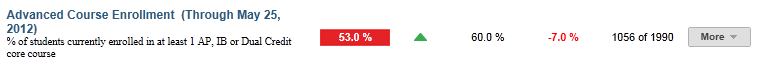
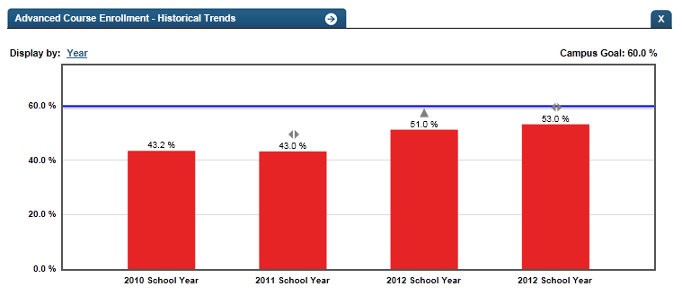

Dashboard Metrics


Advanced Course Enrollment
Background
Campus Dashboard Metrics
Because of the importance of rigorous coursework to post secondary success and to support district efforts to increase advanced course completion, several districts across the country, including Charlotte, Chicago, Dallas and Oakland, have incorporated into their internal performance management dashboards metrics to monitor advanced course enrollment and performance. In focus group discussions conducted with educators, 95% of those surveyed found advanced course enrollment and performance information useful when reported at the campus level. When reported at the student level, the percent of respondents finding the information useful was notably lower (less than 90%). The implication is that this metric, though still valuable to teachers in preparing their individual students for advanced coursework, may be even more useful to principals and counselors in developing strategic, school-wide approaches to increasing enrollment and success in advanced courses.
Primary Metric
- Advanced Course Enrollment: percent of students currently enrolled in at least one AP, IB or dual credit (DC) course in the four core subject areas, with comparison to campus goal.
Related Metrics
- Advanced Course Potential: percent of students with demonstrated potential for advanced coursework (based on past state assessment at or above 2400 and PSAT, if taken, performance at greater than or equal to 80th percentile) who are not currently enrolled in advanced courses (AP, IB or DC courses) in the four core subject areas.
- Advanced Course Availability: percent of students with advanced course potential (as defined above) divided by student slots offered in advanced classes by subject area.
- Advanced Course Completion: percent of students who completed at least one AP, IB or dual credit (DC) course in the four core subject areas during prior years, with comparison to campus goal.
- Advanced Course Mastery: percent of students who scored at or above the specified criterion on required AP and IB exams in the four core subject areas.
User Interface
Dashboard Example
Figure 1 shows the Advanced Course Enrollment metric as seen on the campus dashboard.

Figure 1 Ed-Fi Campus Advanced Course Enrollment Metric
Status Definition
“Advanced Courses” include AP courses, IB courses, other advanced courses identified by the course level type, and dual enrollment (also known as dual credit courses).
The Status column is the percentage of students that are currently enrolled in an advanced course in the following core subjects:
- ELA
- Mathematics
- Science
- Social Studies
The Status indicator is determined by campus-specific thresholds (campus goals) which are set at the district level. The Ed-Fi dashboards default threshold is 60% of eligible students enrolling in advanced courses.
Metric Status Indicator | Comparisons | |||
Metric Name | Sub-metric Name | Metric Status Indicator | Trend | Campus Goal (Delta) |
Advanced Course Enrollment | Red (Percentage) = if percentage of students is less than the campus goal Green (Percentage) = if percentage of students is greater than or equal to the campus goal | Current year to prior year | Campus goal and the calculated percentage of students | |
(a) The Value column displays the number of students enrolled in at least one AP, IB or Dual Enrollment core course out of the total number of eligible students on campus.
Trend Definition
Trend Indicators: Objective is to indicate Advanced Course Enrollment | |||
| Up green | If the value for the current time frame is more than 5 percentage points higher than the prior time frame, then display a gray arrow trending upward. | |
| Unchanged | If the value for the current time frame is less than or equal to 5 percentage points higher or less than or equal to 5 percentage points lower, then display two gray arrows pointing outward indicating no direction. | |
| Down red | If the value for the current time frame is more than 5 percentage points lower than the prior time frame, then display a gray arrow trending downward. | |
The trend does not show for the first occurrence of a time frame since data is not available.
Delta Definition
The Delta column is the absolute value of the difference between the campus-wide percentage (Status column) and the campus goal (Goal column).
Delta Indicators: Objective is to indicate Advance Course Enrollment | |||
Metric Name | Sub-Metric Name | Campus Goal | Delta |
Advanced Course Enrollment | Set campus goal | Red (Delta Percentage) = if the calculated percentage of students is less than the campus goal Black (Delta Percentage) = if the calculated percentage of students is greater than or equal to the campus goal | |
Periodicity
Best practice is to load the data for this metric after each semester’s enrollment is determined.
Recommended Load Characteristics | |
Calendar | Beginning of school year and mid-year |
Frequency of data load | Semester, Yearly |
Latency | Year |
Interchange schema | Interchange-StudentEnrollment.xsd |
Tooltips
The standard tooltips for the metric definition, column headers, and help functions display for this metric.
 is ‘No change from the prior period'
is ‘No change from the prior period' is ‘Getting worse from the prior period’
is ‘Getting worse from the prior period’ is 'Getting better from the prior period'
is 'Getting better from the prior period'
Business Rules
The Advance Course Enrollment metric is the percentage of students that are currently enrolled in advanced courses in the following core subjects for the current school year in grade levels 9 – 12.
- ELA
- Mathematics
- Science
- Social Studies
“Advanced courses” are those defined as follows:
- PreAP courses
- PreIB courses
- AP courses
- IB courses
- Other advanced courses identified by the state
- Dual enrollment (also known as Dual Credit courses)
Data Assumptions
- State-defined and locally-defined advanced courses in the core subjects are available.
Computed Values
The cohort is the set of currently enrolled students across all grades in the campus. Table 6 shows the calculation for the percentage of students enrolled. The results of the calculation display in the Status column.
| Metric | Calculation |
Percentage | Total of all students currently enrolled in one or more advanced courses in a core subject * 100 / Total number of students currently enrolled. |
Data Anomalies
Date of Refresh
Best practice is for the date of last data refresh to appear next the metric in the following format:
- (Through Spring Semester 2010)
Categorizing AP/IB Courses
The designation of AP or IB should reside in the SIS. Occasionally courses are categorized as GT although AP may be in the title of the course. If the course is not categorized int he SIS as AP then it does not count as an AP course for this metric.
Implementation Considerations
Student Identity
Maintaining a correct and consistent student identity is at the center of any education data system. Most systems use some sort of unique identifier. However, sometimes this identifier is entered incorrectly or sometimes different systems use different identifiers.
The UDM XML supports the interchange of multiple types of identifiers. The StudentReference is a complex type within the UDM to maintain the referential integrity of the student (that is, ensuring that the data associated with each student is accurately associated with the right student). The complex type of the student reference assists with implementing the accurate matching algorithm to identify a student by utilizing any of the individual attributes (e.g., Student Unique State ID, Student ID, Campus Local ID (with Campus ID), Name and Birth Date). For example, if the Student Unique State ID is unknown, you can find the student’s identity by their Student ID, First Name, Last Name and Birth Date.
Advanced Course Definition
Best practice is for developers to ensure that the definition of the exact courses that qualify as “advanced” include AP and IB courses, as well as those defined as advanced by both the state and those locally defined by the district. This mapping looks at the course characteristic type as coded locally. In the case of courses that are both AP and another type such as GT, the course should have the characteristic type of AP. If the other characteristic is recorded, the course will not appear as 'advanced.'
Campus Goals
Best practice to set the goals for each campus at the district level. A secure mechanism is required to allow the district to set and maintain those goals.
State Assessment Standards
With state assessment, the assessment indicators are based upon the percentage of students who perform satisfactorily on the assessment. In 2014, with the first full release of state assessment, they will be based on the percentage of students that meet the college ready standard.
State assessment EOC assessments for Algebra II and English III will have college readiness objectives. Evaluating the performance of science and social studies EOC assessments as related to college readiness is still pending. A student must pass these objectives in order to be identified in the data file as college ready.
Each of these objectives requires that the state determine thresholds for student and campus performance.
The Ed-Fi dashboards assume that the test providers include all the data related to state assessment, EOC and college readiness.
Aggregate Metric Inclusions and Exclusions of Special Education Students
Each campus's aggregate metrics may include or exclude the special education population, depending on the intended purpose for a specific metric and campus goal.
Indicator and Metric Definitions
- In researching best practices across leading districts, access to and completion of a rigorous curriculum was identified as a leading indicator of post-secondary success. With respect to advanced academics one way to definite this metric is the percent of students currently enrolled in at least one AP, IB or dual enrollment (DE) course in the four core subject areas. Other related ways districts measure this indicator include:
- Advanced Academics Completion: percentage of students who are enrolled in an advanced course and complete that course.
- Advanced Academics AP/IB: percent of students who are enrolled in an AP/IB course and are registered to take the AP or IB exam.
- Advanced Academics AP/IB: percent of students enrolled in at least one AP/IB course.
Drill Downs
Drill Down Views
The dashboards include the option to see more detail that is associated with a metric. Table 7 list the drill down views that are recommended for this metric.
| Advanced Analysis | Break down of student test assessment (commended, not commended, met standard, and didn't meet standard) (future implementation) | |
| Grade Level | Graph of test assessment detail by grade level and subject area | |
| Historical | Graph of metric values across years. | |
| Student List | List of students who do not meet the threshold for this metric for the specified period. |
Business Rules
The Historical Graph allows the user to see historical data across multiple timeframes. As time passes, there are many bars to be displayed; therefore, the slider on the bottom allows the user to adjust the number of bars displayed as well as the time period shown. The timeframes for this metric were chosen based on educator feedback.
User Interface
Dashboard Examples
Figure 2 shows Historical Advanced Course Enrollment as seen in the campus dashboards.

Figure 2 Ed-Fi Historical Advanced Course Enrollment